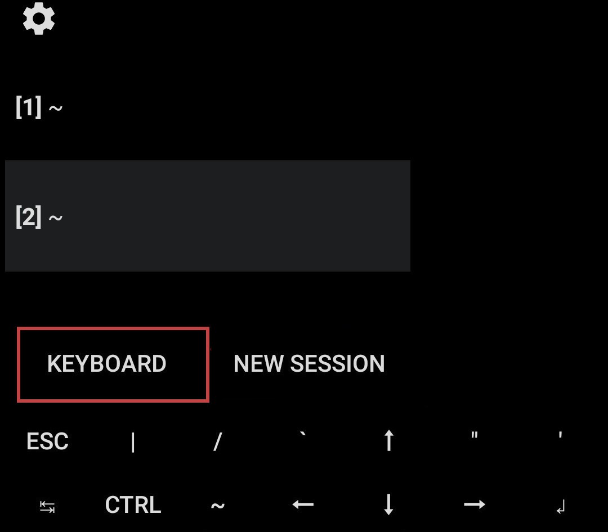
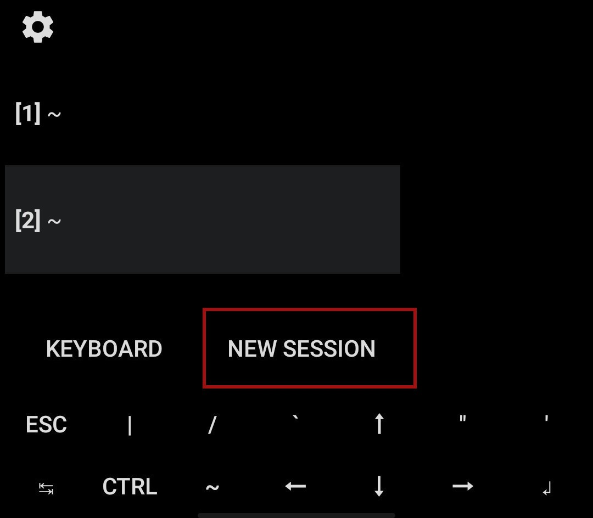
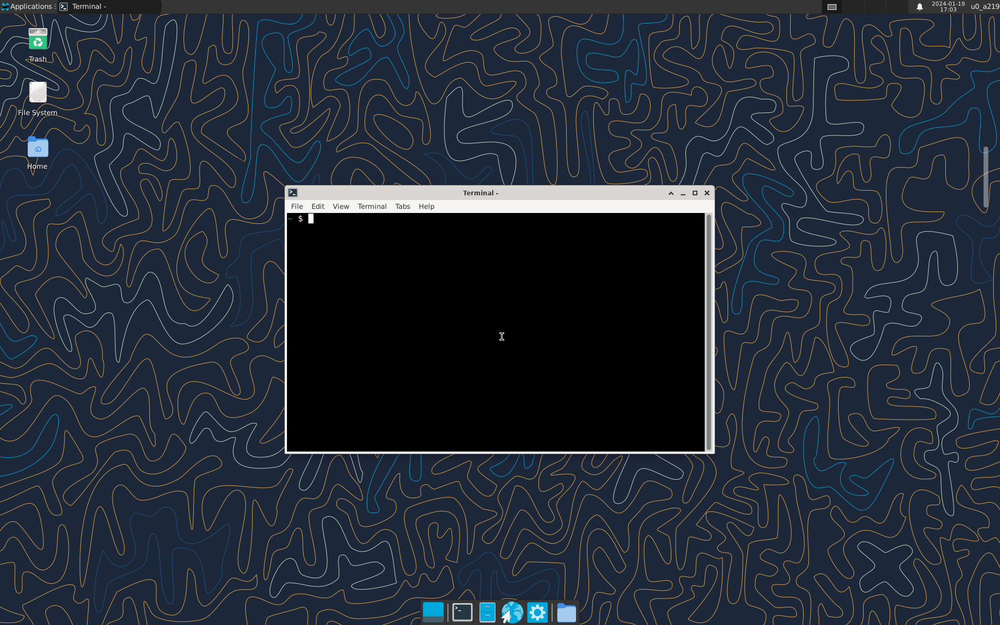
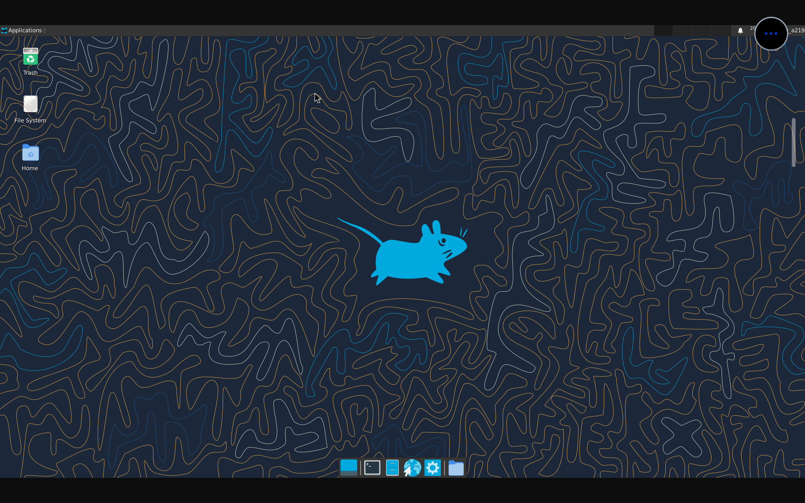
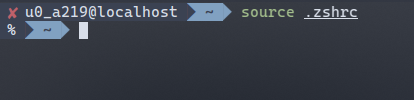

Android Terminal - Termux
This article introduces Termux.
I want to have a terminal on my mobile phone and I found the Termux.
About Termux
Termux is an Android terminal emulator and Linux environment application that works directly with no rooting or setup required.
from Termux Wiki
With Termux, you almost can do any things that you can do on Linux when you use Android. However, there are also some difference between them if you learn more about Termux such as file organization, environment variable and so on.
Install Termux
According to the Termux Wiki, now we should install the termux from F-droid, althought we also can install the old version from Goole Play.
However, there are serval Apps(Addons) about termux and we shouldn’t mix them from different platform.
For addons, I think the Termux:API and Termux:X11 (introduced after) are the most useful.
Packages manage
Termux has the package manager pkg, and I suggest you read the help page of pkg using the command pkg help.
There are some common commands:
pkg update: update apt databases from configured repositoriespkg upgrade: upgrade all installed packagespkg search <query>: search package by query(name or part of description)pkg install <pkgName>: install pkgNamepkg uninstall <pkgName>: uninstall pkgNamepkg autoclean: remove outdated packages
Environment variable
There are some important environment variable in Termux:
-
PREFIX: it is like the root direcory of Linux~ $ echo $PREFIX /data/data/com.termux/files/usr -
HOME: the home path of user(only you)~ $ echo $HOME /data/data/com.termux/files/home
Using this environment variable can reduce the command length and easy to transplant.
Keyboard
When you open Termux, you can see two raw of key at the bottom of the screen,
you can custom it by the extra-keys in ~/.termux/termux.properties(if not exist, create one).
You also can slide left to right to open the sidebar and long press the KEYBOARD button to show or hide the keyboard.

Session
Termux allow you to create multiple sessions, you can open the sidebar and press the NEW SESSIOIN to create a new seesion.

Greet
you can see the greeting message when you start Termux:
Welcome to Termux!
Docs: https://termux.dev/docs
Donate: https://termux.dev/donate
Community: https://termux.dev/community
Working with packages:
- Search: pkg search <query>
- Install: pkg install <package>
- Upgrade: pkg upgrade
Subscribing to additional repositories:
- Root: pkg install root-repo
- X11: pkg install x11-repo
For fixing any repository issues,
try 'termux-change-repo' command.
Report issues at https://termux.dev/issues
Access storage
Because of the Android permission restrictions, you have to enter the command below to request the file access permission.
termux-setup-storage
when you press enter, your phone will show a dialog says “Termux trying access…”, please press the allow button,
and then you can see a directory named storage under you home path.
~ $ ls
storage
In the storage directory, there are only some soft links file which link to your files in your phone storage,
you can also use ln command to create your self or use the absoulte path in command.
~ $ ls -al storage/
total 7
drwx------ 2 u0_a219 u0_a219 3452 Jan 19 14:39 .
drwx------ 5 u0_a219 u0_a219 3452 Jan 19 14:39 ..
lrwxrwxrwx 1 u0_a219 u0_a219 24 Jan 19 14:39 dcim -> /storage/emulated/0/DCIM
lrwxrwxrwx 1 u0_a219 u0_a219 28 Jan 19 14:39 downloads -> /storage/emulated/0/Download
lrwxrwxrwx 1 u0_a219 u0_a219 26 Jan 19 14:39 movies -> /storage/emulated/0/Movies
lrwxrwxrwx 1 u0_a219 u0_a219 25 Jan 19 14:39 music -> /storage/emulated/0/Music
lrwxrwxrwx 1 u0_a219 u0_a219 28 Jan 19 14:39 pictures -> /storage/emulated/0/Pictures
lrwxrwxrwx 1 u0_a219 u0_a219 19 Jan 19 14:39 shared -> /storage/emulated/0
Configure Termux
At first, we update the Termux:
pkg update && pkg upgrade
Before everything, althought Termux is a very useful and powerful tool on Android, it’s recommended that you type on your PC ranther than on your phone. So I will configure the ssh first so that I can type commands on my PC and execute them on my phone.
ssh
-
install
opensshon Termux:pkg install openssh -
generate the key on PC and send public key to Termux:
(on PC)
ssh-keygen -t ed25519 -C "termux" -f ~/.ssh/id_termux_ed25519You can press enter to ignore the password easily.
Now you can the see the public key and private key under the
~/.ssh(on PC)
$ ls .ssh/id_termux_ed25519* .ssh/id_termux_ed25519 .ssh/id_termux_ed25519.pubTo make the termux can identify the PC, copy the content in
.ssh/id_termux_ed25519.pubto$HOME/.ssh/authorized_keyson Termux(on Termux)
echo "ssh-ed25519 ..." >> $HOME/.ssh/authorized_keys -
start openssh service on Termux
Modify the configure to forbid the password connect
sed -i 's/PasswordAuthentication yes/PasswordAuthentication no/' $PREFIX/etc/ssh/sshd_config(on Termux)
sshdThis will make sshd listent on the 8022 port and the ssh client can connect it throught the port.
-
connect
In order to connect to the termux, we need to know the ip of the phone, you can get it throught the WIFI setting in phone. You also can get it use
ip addr, but you may have to install iproute2 first.(on Termux)
~ $ ip addr The program ip is not installed. Install it by executing: pkg install iproute2Connect to the Termux using
ssh -p 8022 -i ~/.ssh/id_termux_ed25519 <ip>and typeyesto continue connection.
Editor
In order to edit file, I firstly install editor. I use neovim here, you can use other if you want.
pkg install neovim
Common software
Install some common software
pkg install git
Development
You can install the language develop kit
-
C/C++
pkg install clang -
Python
pkg install python
Desktop Environment
You can install Desktop Environment in Termux Now, for detail you can see Termux:X11.
I choose the Xfce for my desktop because it’s light.
-
subscribe x11-repo
pkg install x11-repo -
install the termux-x11
You have to install the
termux-x11-....deb(from termux-x11-release) on termux.pkg install <path to termux-x11-...deb>You can get the termux-x11 app from termux-x11-release and then install the termux-x11 app on your phone.
Remember to choose the apk for your phone architecture(you can get it by executing
uname -a) -
install Xfce
pkg install xfce -
start the Xfce
termux-x11 :1 -xstartup "dbus-launch --exit-with-session xfce4-session"Now you can launch the termux-x11 app to use the Xfce desktop.
If there is any exception, you can get help from Termux:X11.

Termux-X11 use the x-org to display, but you also can use vnc to display.
-
install tigervnc
pkg install tigervnc -
start vnc
vncserver :1As the first time you start vnc server you have to setup the password.
Actually after you finish it you can start vnc viewer now, but you will see a black window.
Now use the
vncserver -kill :1to kill the vncserver -
configure vnc
Edit the .vnc/xstartup and replace the
twm &withxfce4-session &and then restart the vncserver. -
connect to the vncserver
I use
gtk-vncon my PC so I connect it usinggvncviwer phone_ip:1.You also can connect it on your phone use
VNC Viewerapp
Terminal
I use the termux-ohmyzsh to make the terminal more beautiful.
-
install zsh
pkg install zsh -
install termux-ohmyzsh
sh -c "$(curl -fsSL https://github.com/Cabbagec/termux-ohmyzsh/raw/master/install.sh)"Choose the color schema and font you like and then reboot the Termux.
-
modified the theme
Because the origin theme show the username and host name with the full path, it’s too long for the prompt, we modified the theme.
cd $HOME/.oh-my-zsh/custom/themes cp ../../themes/agnoster.zsh-theme ./agnoster-modified.zsh-themeThen we modified the agnoster-modified.zsh-theme:
- search the
prompt_dirfunction and replace the%~to%1~. It will make the prompt only show the current directory. - search the
prompt_contextfunction and replace the%n@%mwith anything you like - modified $HOME/.zshrc to set
ZSH_THEME="xxx"toZSH_THEME="agnoster-modified" - source the .zshrc
- search the
If you finish all of above, you will get terminal as below:

proot-distro
proot-distro help you manage the proot linux distribution.
Use pkg install proot-distro to install the package.
After that, you can use proot-distro list to see which distribution you can install,
and then use proot-distro install <distribution> to install the linux.
Finally, you can use proot-distro login <distribution> to login.
The proot like the docker, provide you a truely Linux environment, you even can install the DE like Xfce4 in the proot.
TODO
Install Docker
TODO